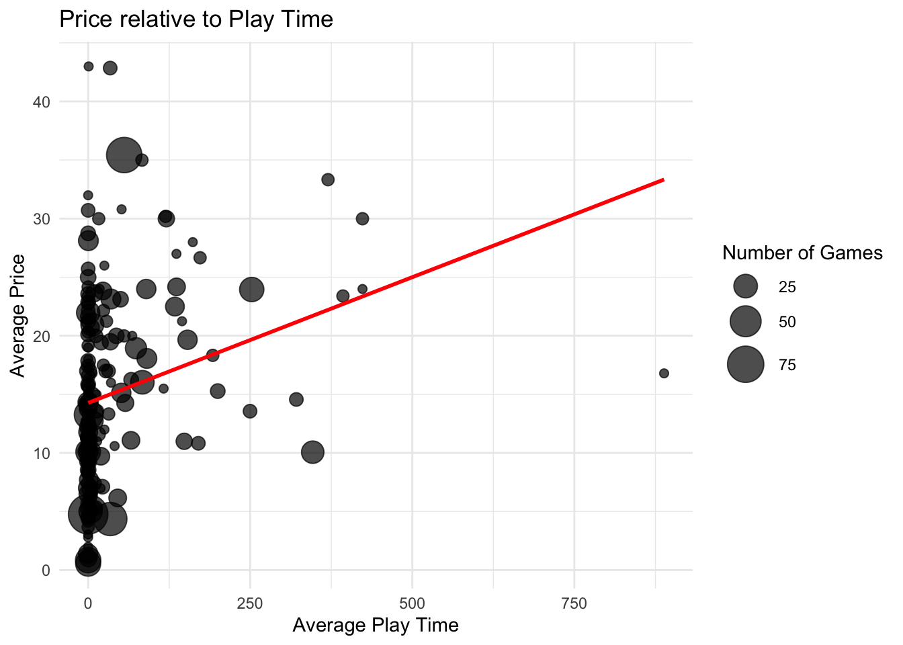
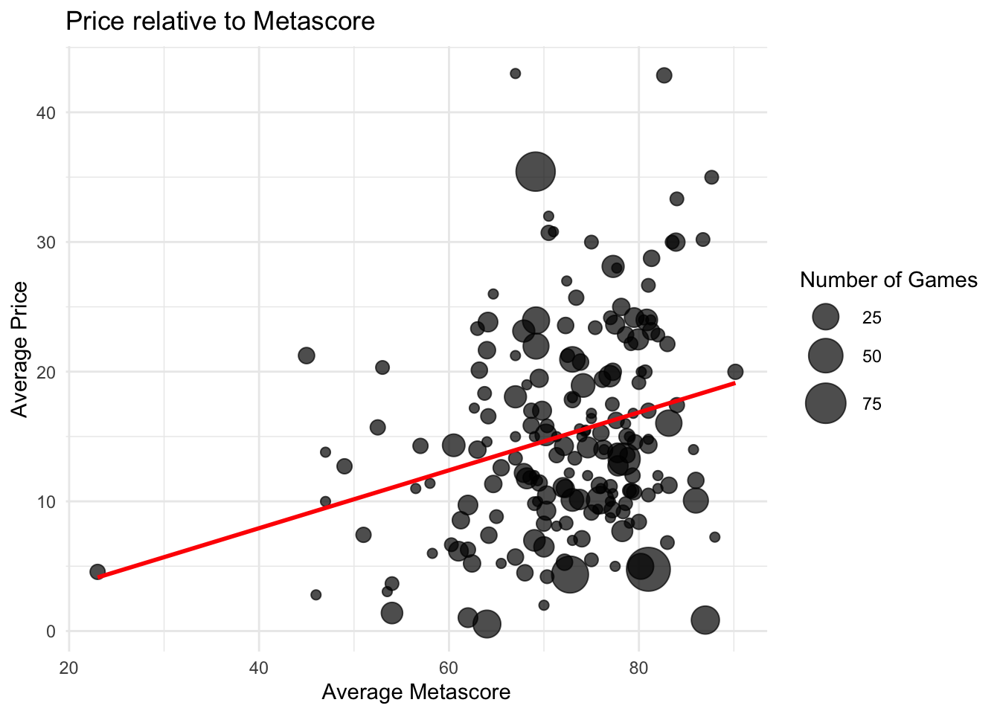
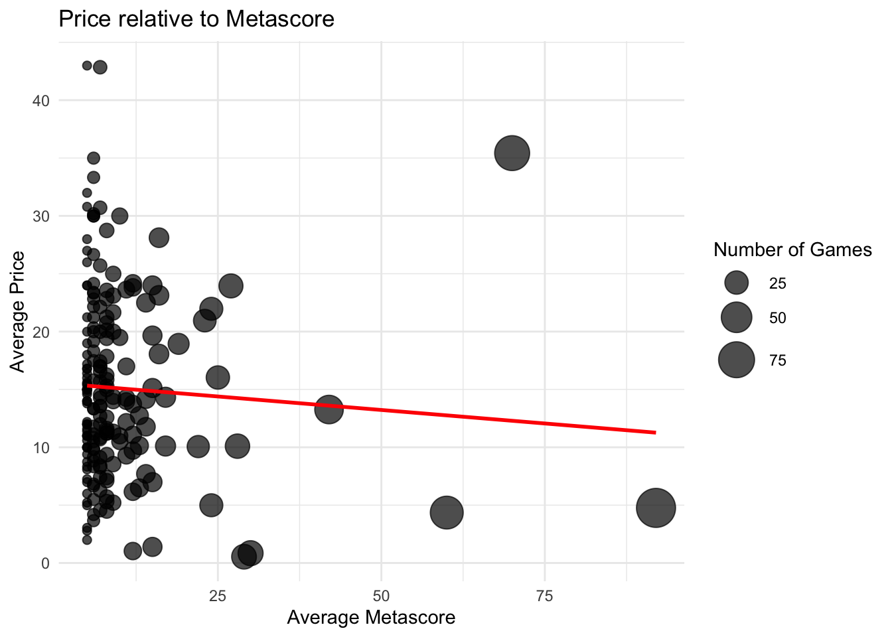
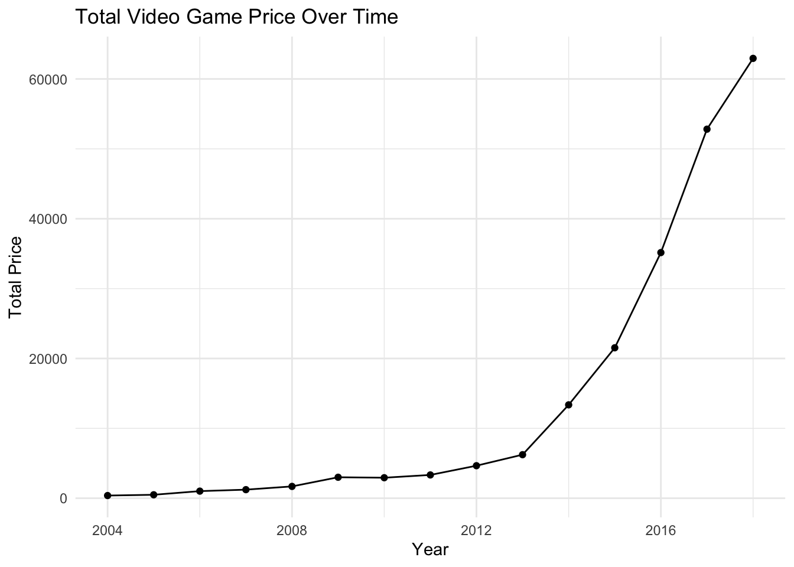
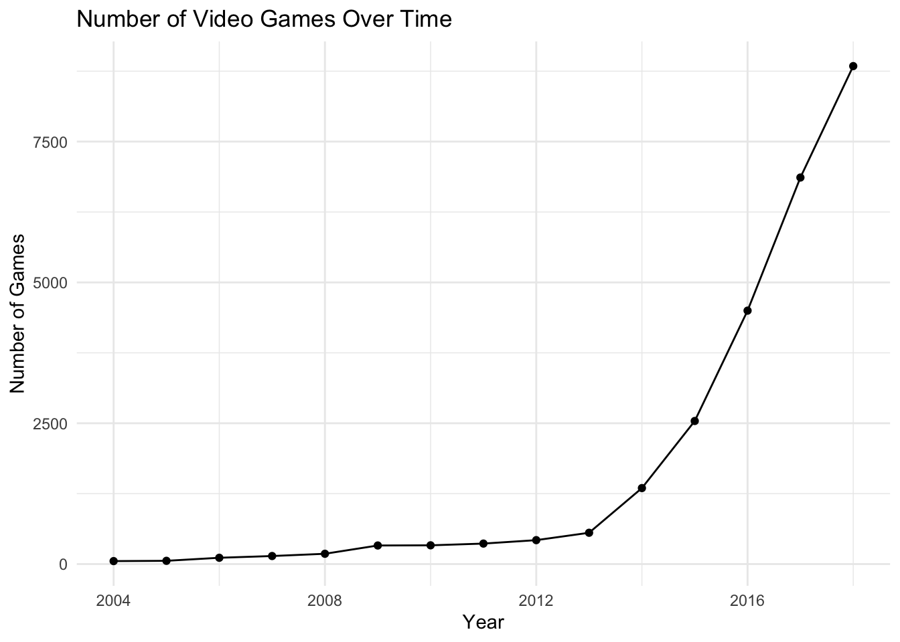
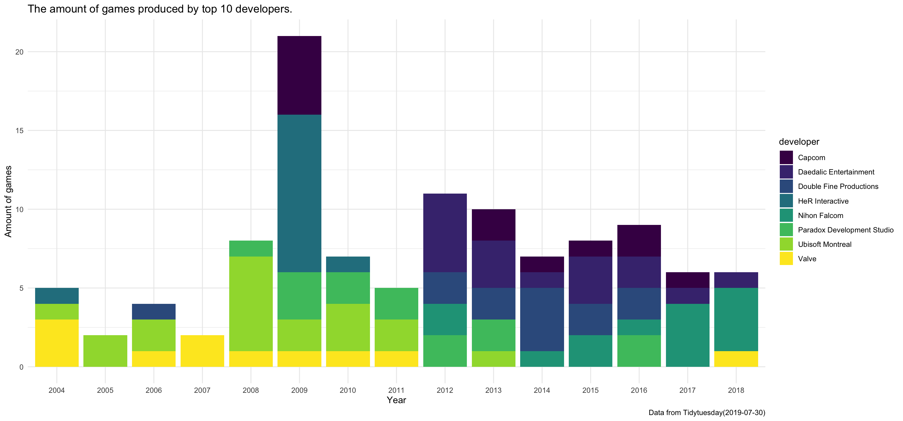
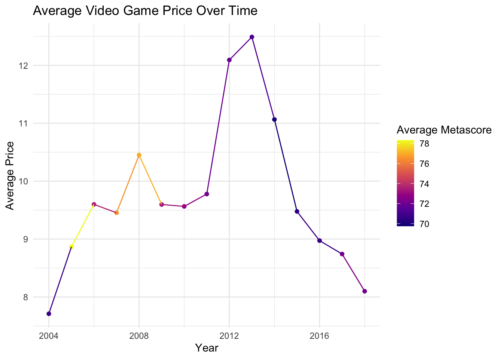

Lego Starwars Clone Wars: Are Video Games worth it?
Motivation
Video games have grown into a dominant field of entertainment. The techniques advances and increasingly diverse forms facilitate the extension field of video games. As video game players we are interested in exploring the changes and developments of video games in recent years.
Research Question
We were investigating what variables affect the price of video games on steam? The variables we used were developer, median and average playtime, metascore, and release date.
Back Ground
This data is from Steam Spy which uses an application programming interface (API) to track activity on the gaming platform Steam. Both Steam and Steam Spy are owned by Valve, a game developer and publisher, both Steam and Steam Spy track other games of other developers and publishers.
The Metascore is a weighted average score of reviews from professional critics that reflects the overall critical reception of a movie, video games or albums. The Metascore is ranging from 0 to 100, and higher scores indicate more positive reviews.
Data
We found this data set from Tidytuesday, originally this data was collected by Liza Wood using Steam Spy. Steam spy collects data from the games on Steam. This data was collected in July of 2019. The data set includes information for 26688 games, and for each game, there are 10 different variables: the game number, the game title, released date, price in US dollars, the estimate number of people owning this game, company that developed the game, company that published the game, average playtime, median playtime, and Metascore rating. The data is well organized, so we don’t need to clean a lot before exploring. The only concern is the missing data in the cells.
Data Insights
For most of the developers, the average playtimes of their games are around 0, which might be because of the difficulty to record the playtime from the players. There is a positive correlation between the price and average playing time so that we expect the average price of a company’s game would be higher if the average playtime of this company is higher.


There is also a positive relationship between average Metascore and average game price of companies. All the companies have average Metascore greater than 40, except one company with average Metascore 23. Interestingly, there is a negative correlation between the average price of a company’s games and the number of games a company develops. This means that if a company developed more games, the expectation for the average price of games that this company developed would be lower. We also created a shiny app so that people can explore and play around with the data by themselves! Click here to open the Shiny app


One interesting finding of our analysis is that there is a significant spike in game price and production in 2012/2013, the increase has steadily continued since. We can also see that since 2012/2013 games are getting more expensive but are being rated less. However, because there are more games being produced the average price of games is going down, this makes sense the total price of games per year is increasing because there are more games produced but the average is going down because of the same increase in games production. Overall there are more games being produced, the total price of games is increasing, but they are not necessarily getting “better”.

This plot is of the top 10 developers of video games on Steam. This plot is important to our project as it shows us who is developing the most games. In this plot we can see that the top developers of games changed over time, from 2004-2011 Valve and Ubisoft were pretty consistently in the top, however after 2011 companies like Capcom, Daedalic entertainment, and HeR productions were consistently at the top. Another important aspect of this plot is the spike in 2012/2013 which mirrors that of our other plot. We can see that this video game craze that happened in 2012/2013, which affected all of Steam, reached the top developers of games.

The plot shows an overall increasing trend of average price of games between 2004 and 2013, especially the remarkable increase from 2012 to 2013. However the price of games dropped significantly after 2013. The average Metascore also decreased after 2013 compared to years between 2004 and 2013.
Conclusion
In 2012 Steam Greenlight, a feature that allowed users to vote on which games were to be released on steam, was added to the platform. This meant that more games were able to be released because of the backing by the community. In 2013 Linux came to steam adding a new system to steam and bringing in new players. These might be the reason why the total amount of game increases rapidly after 2013.
We can also make the conclusion that the the price of video game is relative to metascore, the number of games a company produced and the average playtime.
Limitations and Future Work
The many zeros in the median and average playtime made our research difficult as any analysis using those variables were heavily skewed. The games that say that they have zero playtime do still have reviews and owners, so people are playing them. We theorize that this discrepancy is because steam cannot track the playtime for some games or that many people refrain from logging their playtime in steam. Finding a dataset that has a more indepth look at playtime might help us have a better and more accurate understanding. Another limitation of our dataset was that the “owners” variable was confusing, instead of giving a clear answer on how many people owned the game they gave a very rough estimate that ranged from 0-100,000 owners. We were unable to do anything with this variable because of its confusing and unhelpful nature. Another limitation is that this dataset is only taking data from steam, therefore the generalizability of this dataset is lower. For example some games are only publisher exclusives and therefore are not on steam. There may be a game publisher who is publishing games exclusively on their own platform and, with its addition to steam, would affect our dataset greatly.
Here is our presetation and video that you can look at: